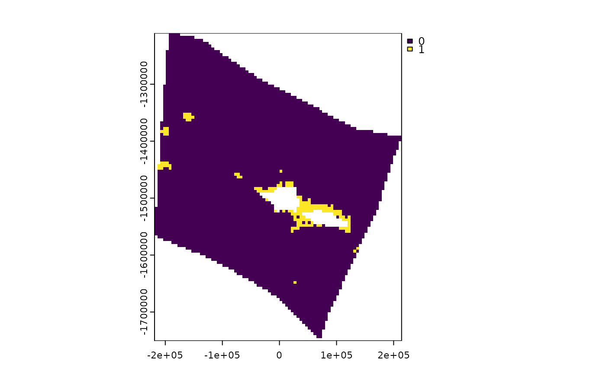

Get gridded or cropped data from input data
get_data_in_grid.RdGet gridded or cropped data from input data
Usage
get_data_in_grid(
area_polygon = NULL,
spatial_grid = NULL,
dat = NULL,
meth = NULL,
name = NULL,
sf_col_layer_names = NULL,
antimeridian = NULL
)Arguments
- area_polygon
sfpolygon- spatial_grid
sforterra::rast()planning grid- dat
sforterra::rast()data to be gridded/ cropped- meth
charactermethod to use for for gridding/ resampling/ reprojecting raster data. If NULL (default), function checks if data values are binary (all 0, 1, NA, or NaN) in which case method is set to "mode" for sf output or "near" for raster output. If data is non-binary, method is set to "average" for sf output or "mean" for raster output. Note that different methods are used for sf and raster asexactextractr::exact_extract()is used for gridding to sf planning grid, whereasterra::project()/terra::resample()is used for transforming/ gridding raster data.- name
characterto name the data output- sf_col_layer_names
charactervector; name(s) of columns that contain the data to be gridded/ cropped insfinput data; defaults to first column- antimeridian
logicalcan be set to true if the data to be extracted crosses the antimeridian and is in lon-lat (EPSG:4326) format. If set toNULL(default) the function will try to check if data spans the antimeridian and set this appropriately.
Value
sf or terra::rast() object; cropped and intersected data in same format as dat if an area_polygon is provided, otherwise sf or terra::rast() planning gridded data depending on the format of the planning grid provided
Examples
# knolls data for area of Pacific
knolls <- system.file("extdata", "ridges.rds", package = "spatialgridr") |> readRDS()
# an area of interest, in this case Samoa's Exclusive Economic Zone
samoa_eez <- system.file("extdata", "samoa_eez.rds", package = "spatialgridr") |> readRDS()
# You need a suitable projection for your area of interest, https://projectionwizard.org is useful for this purpose. For spatial planning, equal area projections are normally best.
samoa_projection <- '+proj=laea +lon_0=-172.5 +lat_0=0 +datum=WGS84 +units=m +no_defs'
# Create a planning grid with 5km sized planning units
planning_grid <- get_grid(area_polygon = samoa_eez, projection_crs = samoa_projection, resolution = 5000)
# Get knolls data, which is vector data in sf format, in the planning grid
knolls_gridded <- get_data_in_grid(spatial_grid = planning_grid, dat = knolls)
#> Warning: attribute variables are assumed to be spatially constant throughout all geometries
terra::plot(knolls_gridded)
#Get some raster data on cold water corals for the same planning grid
cold_coral <- system.file("extdata", "cold_coral.tif", package = "spatialgridr") |> terra::rast()
coral_gridded <- get_data_in_grid(spatial_grid = planning_grid, dat = cold_coral)
terra::plot(coral_gridded)
